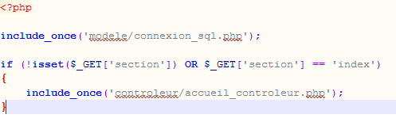
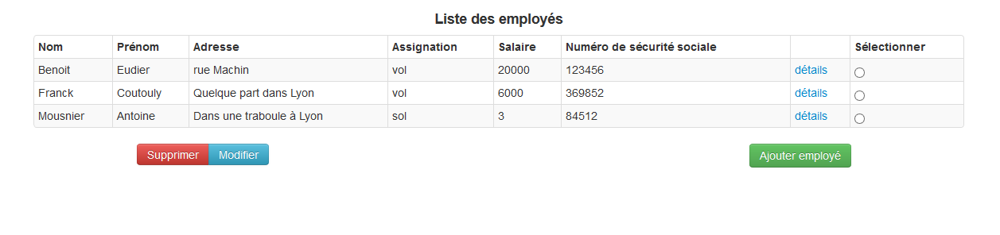

L'aéroport
Compte rendu de Bureau d'étude - Base de donnée - MOD 2.8
Le présent document décrit le travail réalisé au cours du bureau d'étude du module ouvert disciplinaire "Base de données", par la colaboration de Benoit Eudier et Franck Coutouly.
Prérequis pour l'utilisation des liens
Pour l'interface homme-machine de la base de donnée, nous utilisons conjointement pHp et HTML/CSS. Il est donc nécessaire d'avoir un serveur web configuré pour pHp. Nous avons ainsi utilisé WAMP pour faciliter la configuration. Il faut de plus modifier un fichier php pour pouvoir se connecter à la base de données. Ce fichier est situé dans le dossier /modele et est appelé connexion_sql.php.
Introduction
Le sujet du bureau d'étude qui a été choisi est la conception d'un complexe informatique pour une compagnie aérienne. A partir du cahier des charges fourni, nous allons donc construire la base de données, avec les différentes contraintes, vues, triggers. Nous allons ensuite créer une interface graphique nous permettant d'effectuer des opérations élémentaires sur cette base de donnée, toujours dans le thème de l'aéroport. Ce sera donc un site web de compagnie aérienne simplifié.
I. Le cahier des charges
D'après le sujet, voici les éléments à prendre en compte dans notre base de données.
L'ensemble des employés se compose du personnel navigant et du personnel au sol. Parmi le personnel navigant, on distingue les pilotes et les membres de l'équipage (hôtesse, steward, etc.). Un employé est caractéerisée par un numéro de sécurité sociale, un nom, un prénom, une adresse et un salaire. Un personnel naviguant comptabilise un certain nombre d'heures de vol. Un pilote possède une licence définie par un numéro. Un membre d'équipage assure une certaine fonction (h^otesse, steward, etc.). Un appareil est identifié de manière unique par un numéro d'immatriculation. Il possède un type (A320, B747, etc.). Chaque liaison de la compagnie relie un aéroport d'origine et un aéroport de destination ; les aéroports sont identifiés par un nom et un code de 3 lettres (CDG, TLS, JFK...) non unique. Bien entendu les clients ne connaissent pas forcément le nom des aéroports quand ils réservent un billet. Un vol est identifié par un numéro de vol. Il est caractérisé par une période définie par deux dates. Durant cette période, ce vol a des horaires fixes (départ et arrivée). Un vol dessert une liaison est une seule. Un appareil et un seul est associé à un vol donné. Pour chaque vol enregistré, on suppose qu'il existe un départ toutes les se- maines. Un départ est défini par un numéro de vol et une date de départ. A un départ sont associés un ou deux pilotes et deux membres d'équipage. Un départ est également caractérisé par un nombre de places libres et un nombre de places occupées. Une place occupée est une place ayant donné lieu à une réservation avec émission d'un billet. Un passager est identifié par un numéro. Il possède un nom, un prénom et une adresse. Il effectue des réservations qui donnent lieu à l'émission de billets. Un billet est repéré par son numéro. Il comporte une date d'émission et un prix. Un billet référence un départ et un seul. On suppose aussi qu'un billet concerne un client et un seul.Nous pouvons découper nos tâches en deux grandes catégories:
- Le design et la création de la base de données
- La création d'une interface utilisateur pour exploiter notre base de données
II. Le modèle de base de données
III. Architecture physique et dimensionnement
IV. L'application serveur
Cette application nous servira principalement à illustrer la base de données créée précédemment en prenant comme exemple un site basique de compagnie aérienne. D'un point de vue logique, l'application se découpe en deux parties. La première partie est visible par les éventuels clients et la seconde est l'interface d'administration de la base de données.
L'application sera programmée en respectant le pattern MVC (modèle, vue, controleur). Pour bien séparer les fichiers sources appartenant aux modèles, aux controleurs, aux vues ou aux ressources de l'application, l'arborescence de notre dossier est constituée de la manière suivante.

Les fichiers php à la racine du dossier seront les urls vues par les utilisateurs. Dans chacun de ces dossiers, il y a encore une distinction entre les
fichiers sources destinés à l'interface publique et ceux destinés à l'interface administrateur. Les fichiers "modèles" sont le lien entre la base de données
et notre application. Ils prennent donc en charge la connexion à la base de données et fournissent les différents getter et setters. Les vues ne concernent
que l'affichage des pages webs. Elles peuvent contenir du code html et php (comme des "echo" de variables). Enfin, les controleurs servent à faire le lien
entre les modèles et les vues. Ils s'occupent de tous les traitements de données, de formulaires. Il servent aussi à sécuriser les entrées utilisateurs.
La syntaxe des différents fichiers est la suivante :
- nom_vue.php pour une vue
- nom_controleur pour le controleur correspondant
- nom.php à la racine du dossier pour le code dont l'utilisateur aura accès

Le fichier controleur correspondant est le suivant:

Nous pouvons remarquer que le fichier vue correspond est inclus à la fin du controleur. Ce dernier n'est qu'un fichier html/php, qui utilise les variables du controleur. Ces variables peuvent être issues de la base de données grâce aux fonctions des modèles (nous pouvons noter la ligne include_once(modele/fonctions_mysql.php) ou issues d'un formulaire. Maintenant que nous avons vu l'architecture de notre application, nous allons maintenant nous concentrer sur les fonctions de ses deux parties, l'interface utilisateur et l'interface administrateur.
a. Service public
Cette partie de l'application est la face public du site web de la compagnie aérienne.
b. Service administrateur
La partie administrateur nous sert à gérer les différentes lignes et les employés. Par exemple, nous pouvons voir la liste des employés, en sélectionner un pour voir les détails le concernant, en modifier ou en supprimer un et finalement en ajouter un. L'interface se présente de la manière suivante. 
Conclusion